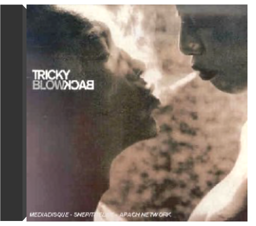
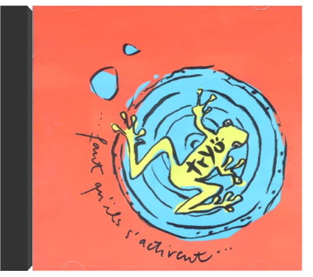
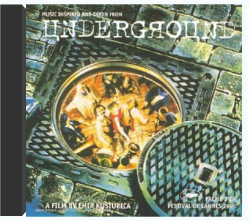

 blowbacktricky  Deux ans après Juxtapose, Adrian Thaws, alias Tricky, confirme son goût pour les échafaudages musicaux avec un sixième album solo intitulé Blowback. Désormais hébergé chez Anti, une division du label punk-hardcore Epitaph, le sale gosse du trip-hop, Bristolien expatrié sous le soleil de Californie, a invité quelques collègues à brouiller ces atmosphères claustrophobes et ombrageuses autrefois concoctées sur le fil du rasoir avec Martina Topley Bird. Parmi ce casting détonnant, Alanis Morissette croise Cindy Lauper ou Ed Kowalczyk de Live, quelques membres des Red Hot Chili Peppers, la chanteuse new-age Ambersunshower et le toaster jamaïcain Hawkman. Tous préposés au chant, ils aident Tricky à drainer ses climats douloureusement crispés vers une pop sensuelle et éclectique irradiée de rock, soul, hip-hop et ragga. Avec ces quinze titres inédits dont une reprise écorchée du "Something In The Way" de Nirvana, une adaptation rock du thème de "Wonder Woman" ou une comptine "Your Name" (tirée du film "Meet Me In St. Louis" avec Judy Garland), l'ex-reclus paranoïaque a rongé son hermétisme d'antan pour plonger ses mélodies infectieuses dans un groove métallique. —Sabrina Silamo  faut qu'ils s'activenttryo Drôle de nom que celui de ce quatuor acoustique. Manu (instrumentiste), Guizmo (auteur et guitariste), Mali (chanteur) et Daniel (percussionniste), quatre loustics portés par les vents associatifs (très engagés, ils militent notamment en faveur du Tibet et de Greenpeace) ne se souciant guère du politiquement correct. Leur préoccupation principale : sévir dans un genre qui leur tient particulièrement à coeur, le reggae, auquel ils ajoutent ici un doigt de ragga là une pincée de ska. C'est à travers cette mosaïque musicale qu'ils expriment la tolérance ("J'ai trouvé des amis"), soutiennent le droit de vote des immigrés ("Les Extrêmes"), dénoncent le matraquage commercial et ironisent sur les boys bands ("La Débandade"). Tryo capture ainsi la vie et ses travers sans aucune complaisance mais peut aussi se vanter de s'être construit seul (le groupe s'autoproduit). Un bon bouche à oreille leur a valu de vendre leur premier album (Mamagubida) à plus de 400 000 exemplaires. Parions qu'il en sera de même pour celui-ci. —Valérie Dupouy |  undergroundunderground Deux ans après s'être fait épingler une palme d'or en 1985 pour Papa est en voyage d'affaires, Emir Kusturica récidive avec Underground. Comme à son habitude, le Yougoslave fait appel à son ami de toujours, Goran Bregovic. Car Kusturica a une véritable connaissance des traditions musicales de son pays. Le bonhomme, ex-punk, jouait de la basse entre 1986 et 1988 avec Zabranjeno Pusenje autrement dit No Smoking (qui renaît de ces cendres à l'avènement du deuxième millénaire). Ainsi la musique d'Underground navigue entre jazz, folk et musique tzigane, country, pop et marches turques. La partition accroche des cotillons et des serpentins à des refrains de fête foraine. Elle décompose une poésie slave s'étalant dans la débauche d'un univers baroque traversée par la voix nostalgique de Cesaria Evora. Sa saudade intitulée "Ausencia" illumine ce bric à brac de rythmes influencés par la culture gitane. —Sabrina Silamo |

Julien
Collection Total:
1 944 Items
1 944 Items
Last Updated:
Apr 16, 2022
Apr 16, 2022


 Made with Delicious Library
Made with Delicious Library